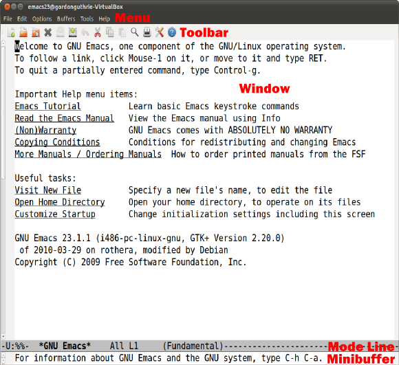

Lesson 1-1 - Using Emacs¶
Learning Emacs¶
This book is not designed to teach you how to use Emacs. It will teach you enough Emacs to complete the work in this book, but not more.
If you want to learn to use Emacs then you should consider buying a book - I recommend Learning Gnu Emacs.
Emacs Components¶
The version of Emacs we are using has 5 components on it:
a menubar
a toolbar
a window area (it is possible to have multiple window views)
a mode line
a minibuffer
These are used for different things and are marked on the diagram below:
A file is referred to as a buffer - and a window is therefore a view of a buffer.
Emacs Keys¶
Emacs is primarily a keyboard-focused editor. The version we are using has mouse-friendly components (the menu bar, the toolbar) but they are very much tacked on. In a lot of environments the non-X Windows version isn’t supported so learning the key short cuts for all menu actions is essential.
In this book the various keyboard short cuts will be introduced as needed. There are two keys that you will need to know about.
Emacs uses so-called key modifiers to implement keyboard shortcuts. The two important ones are the Control Key ([Ctrl] on your keyboard) and the Meta Key ([Alt] on your keyboard). Some keyboard shortcuts require you to use both of them at the same time.
The most common key modifier on the keyboard is the Shift Key [Shift]. Control and Meta/Alt work in the same way. You implement Control-x by pressing [Ctrl] first, and then, whilst holding it down, pressing x - the same way as you do Shift-x.
Where keyboard commands are required in this book they will be spelled out, but in other publications online (or the Emacs help) they are often written in a contracted form like C-x or M-x.